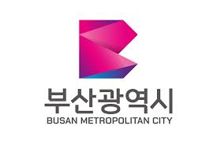

Day 5: Exploring South Korea

This image showcases the blend of modernity and tradition that defines South Korea's unique landscape and culture.
Introduction to South Korea
South Korea is a country in East Asia known for its technology, culture, and beautiful scenery. The capital city is Seoul.
Big Cities
Other big cities in South Korea include Busan and Incheon. Each city has its own unique culture and attractions.
Natural Beauty
South Korea is known for its mountains, islands, and national parks.
People and Languages
People in South Korea speak Korean. They enjoy festivals, like Chuseok and Seollal, and delicious food, like kimchi and bulgogi.
Famous South Koreans
Some famous people from South Korea include Ban Ki-moon, a former UN Secretary-General, and BTS, a famous music group.
Provinces, Their Flags, and Capital Cities in South Korea
| Province | Flag | Capital City |
|---|---|---|
| Seoul |  |
Seoul |
| Busan |  | Busan |
| Incheon |  |
Incheon |
| Gyeonggi |  |
Suwon |
Seoul

N Seoul Tower, a communication and observation tower located on Namsan Mountain in central Seoul.

Gangnam District, known for its trendy shopping and entertainment venues, highlighted by the iconic COEX Mall.
Busan

Haeundae Beach, one of the most popular beaches in South Korea, famous for its beautiful white sand and beach festivals.

Busan Tower, a symbol of Busan located in Yongdusan Park, offering panoramic views of the city.
Incheon

Incheon Bridge, a cable-stayed bridge that connects the city of Incheon to Yeongjong Island and Incheon International Airport.

Songdo International Business District, a modern and sustainable city built on reclaimed land.
Gyeonggi

Namyangju, known for its scenic views and proximity to the Bukhan River and surrounding mountains.
Suwon, the capital of Gyeonggi-do, famous for the Hwaseong Fortress, a UNESCO World Heritage Site.
Did you know?
South Korea is home to the world's first cloned dog, Snuppy, created by scientists at Seoul National University in 2005.
Seoul is known for its vast subway system, which is one of the largest in the world and serves over 7 million passengers daily.
The Korean demilitarized zone (DMZ) is the most heavily guarded border in the world, separating North and South Korea.